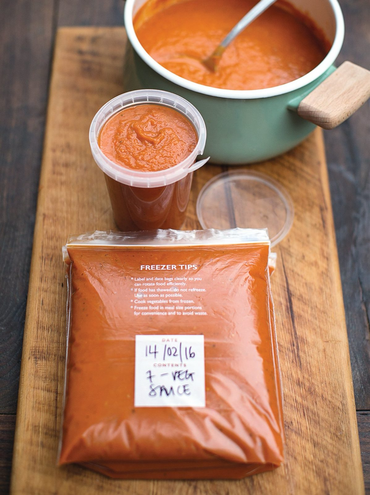

7-Veg Tomato Sauce
A batch tomato sauce with seven vegetables cooked down into it and blitzed smooth, made to be frozen in portions.

Ingredients
Method
- Prep all the veg, either by hand or in batches through a food processor.
- Peel the 2 small onions. Wash and trim the 2 small leeks, 2 celery sticks, 2 carrots and 2 courgettes. Deseed the 2 red peppers and the ½ butternut squash, leaving the squash unpeeled.
- Finely chop all of it. Peel the 2 garlic cloves and finely chop those by hand.
- Put a very large pan on a medium heat with the 2 tbsp olive oil. Add the garlic and the 2 tsp dried oregano and fry for 1 minute.
- Add all the prepped veg, put the lid on and cook for 25 minutes, until soft but not coloured, stirring regularly.
- Pour in the 2 x 400g tins of plum tomatoes, breaking them up with a wooden spoon. Just under half-fill each tin with water, swirl it round and pour that in too.
- Simmer for 25 minutes, until the sauce has reduced. Leave to cool a little, then blitz until smooth. Taste and season.
Notes
- The source says only makes 2 and never says of what. It calls this a batch recipe and the tip is to divide and freeze it, so two batches is the reading — but weigh what comes out before you portion it.
- For more flavour, roast the veg instead: toss the prepped veg with olive oil, salt and pepper in a large sturdy tray and roast at 180°C fan for about 1 hour, until soft and caramelised. Put the tray on the hob over a medium heat, add the tomatoes and water as above and simmer. Keep it chunky with a potato masher or blitz it smooth, and finish with a little red wine vinegar.
- In any recipe using more than one tin of tomatoes, swap one tin for a tin's worth of this sauce.
- Works with almost any veg, so it is a good way to use up what is in season.
Source: https://www.jamieoliver.com/recipes/pasta/seven-veg-tomato-sauce/